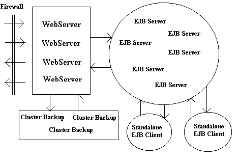

|
|
OverviewThe Blazix Java Server consists of a Web Server, an EJB Server, and various tools, including an EJB generator wizard called "Blizzard", JSP debugging code generator, Web application packager, Remote administrator, and clustering support software.Several Blazix Web Server can be put together in co-operative clusters managed by front-end load-balancing equipment. EJB Servers can similarly share the processing load via EJB Naming Servers. The separation of the Web Servers and the EJB servers allows much flexibility in designing application architectures. For instance, Web Servers can be accessible via the firewall, without needing to expose the EJB Servers which can be completely inside the firewall and still provide the processing needed by the Web Servers. The number of Web Servers or the number of EJB servers can be grown independently of the other, based upon the load characteristics. The diagram below shows a possible deployment scenario. The web servers form one cluster, and are backed up by cluster session backup servers. The EJB servers form another cluster. Thus as the load increases, the clusters can be easily grown (scalability and performance.) And at any one time the failure of any one server is not critical because the other servers in the clusters can pick up the load (reliability.)  |